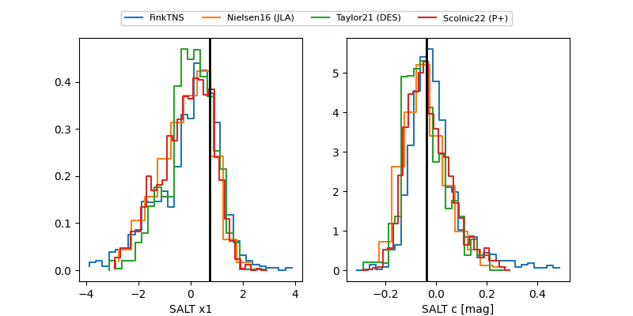

FINK: ZTF25abrdrlq
Lasair: ZTF25abrdrlq
ALeRCE: ZTF25abrdrlq
TNS: 2025xtc
YSE: 2025xtc
ZTF25abrdrlq (ztf,fink)
2025xtc (tns,yse)
equatorial (ra, dec) = (293.2912,-15.55067)
galactic (l, b) = (23.4022,-16.11050)

last ztfg=19.99
1 ztfg detections